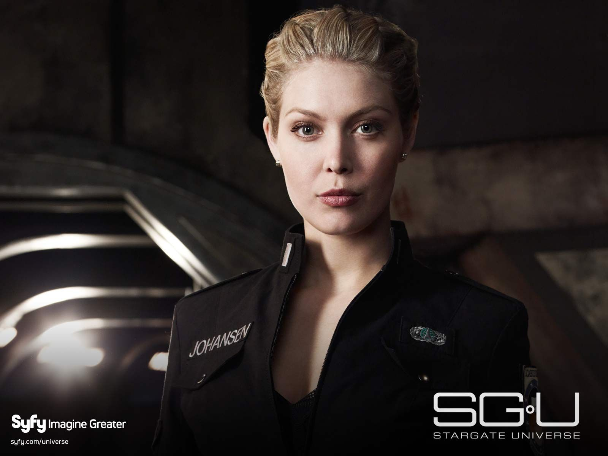
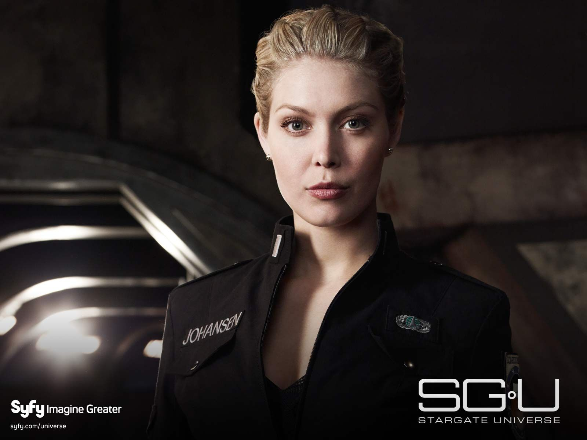

Star Gate Universe Characters


 

- Site Map
on the characters page, we will take a look at the background story of some of the caharacters from Stargate Universe - SGU
Pic 1
Nicholas Rush
expertising in Ancient technology. nicholas's research was hindered somewhat when he was married to Gloria Rush his wife.
Since she passed away he has become more dedicated to science and his reserch on a whole. He becomes very involved in the Icarus Project leading the way to new findings.
his major goal is to explore the mysterys behind the ninth chevron of the Stargate itself.
nicholas was stationed at the Icarus Base back in 2009 the objective was to carry out further research on the ninth chevron. During an attack on the base
Rush and Eli Wallace find out how to dial the ninth chevron. they are responsible for sending the remaining Icarus personnel to an Ancient ship better known as the Destiny
a spaceship located in a galaxy unknown to our own with no way of getting back to Earth. Rush is obsessed with completing Destiny's mission and wont let anyone get in his way.
Pic 2
Eli Wallace
studied at (MIT) but soon after dropped out of college.
Before eli was unemployed and spent most of his time playing video games most notably the game Prometheus.
he was eventually taken into the stargate command where his skills where put to good use in thr persuit in unlocking the nineth chevron.
At the same time, he lived with his mother who use to be a full time nurse before becoming infected with HIV, which she contracted due to a needlestick injury from an infected hypodermic needle,
while treating a HIV infected addict who at the time was putting up a fight when being trated. She has no medical insurance and its not until Eli joins the Icarus project that the air foce pays for her exspenses in return for eli's help.
He is later sent to the ship Destiny as part of the group of refugees fleeing the Lucian Alliance attack.
Shortly after his arrival eli found flying balls which tuned out o be cammeras, he named these kinos there basically an advanced Ancient version of the M.A.L.P. probes used by Stargate Command.
eli records the crews interactions and personal logs for a documentary archive of their voyage on-board the space ship Destiny.
Pic 3
Everett Young
is a USAF - (united states air force) Colonel. Young at the age of 40 years old and married to his wife Emily Young since 2005.bring his own personal relationship issue on board with him.
and the show opens we she youngs crew forced through the Stargate becoming stranded on the spaceship Destiny.
As the most senior military personnel, he becomes Captain aboard the Destiny. It is revealed in later episodes that while in command of Icarus Base,
he had a brief affair with a subordinate junior officer Lt. Johansen resulting in her pregnancy.
It is this affair coupled with his refusal to put his wife before his military career that ultimately leads to the end of his marriage.
As commented by Dr. Rush, Colonel Young has been through hell in his time on-board Destiny which almost caused him to go insane.
Pic 4
Matthew Scott
scott a USAF -(unites states air force) First Lieutenant. after the Icarus Base falls under attack Colonel Everett Young has Lt. Scott lead the expedition to the ninth chevron address after dr. Nicholas Rush dials it instead of Earth.
After arriving on board Destiny Young who was injured during the evacuation puts Scott in command. When Young soon recovers Scott remains as military second in command and leads the off world away teams.
Lt. Scott develops a relationship with chloe armstrong -Pic 5 and used to have one with Lt. Vanessa James - pic6, before coming on board the spaceship Destiny. He is great friends with Sergeant Ronald Greer and Eli Wallace.
Previous to joining the air aorce scott fathered a child, which he had no knowledge of until a few years later.